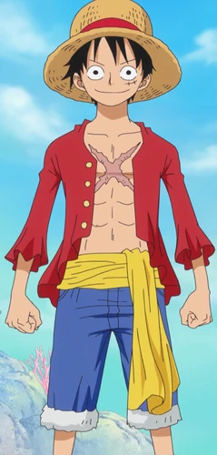
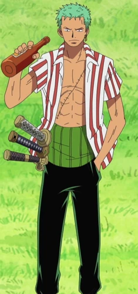
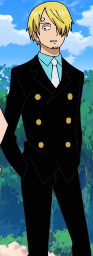
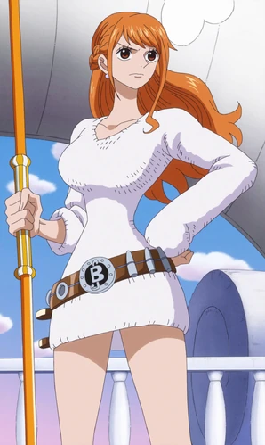

The One Piece is Real!
This page is dedicated to the Straw Hat Pirates. It covers the different members and their adventures. If you would like to know more feel free to sign up!

My favorite One Piece Characters!
Monkey D. Luffy
The captain of the Straw Hat pirates! His unwavering tenacity is complemented by a strong case of ADHD.
Roronoa Zoro
The second member of the Straw Hat pirates. On a quest to be the worlds greatest swordsman.
Can be a party pooper at times.
"Black Leg" Sanji
The fifth member of our crew and the ships 5 star cook.
When it comes to the ladies, no one is more down bad than my boy.
"Cat Burglar" Nami
The third member of the crew. Nami doesnt have any special powers but she is a GOAT navigator and a certified baddie.
Power isn't determined by your size, but the size of your heart and dreams!
-- Monkey D. LuffyStay up to date with the latest One Piece news!
Get access to exclusive One Piece content when you join our newsletter